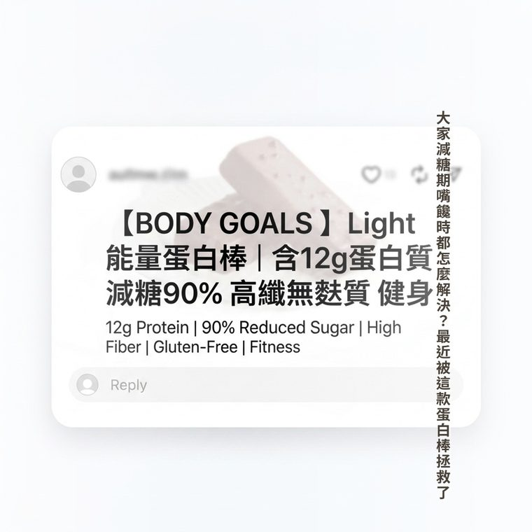
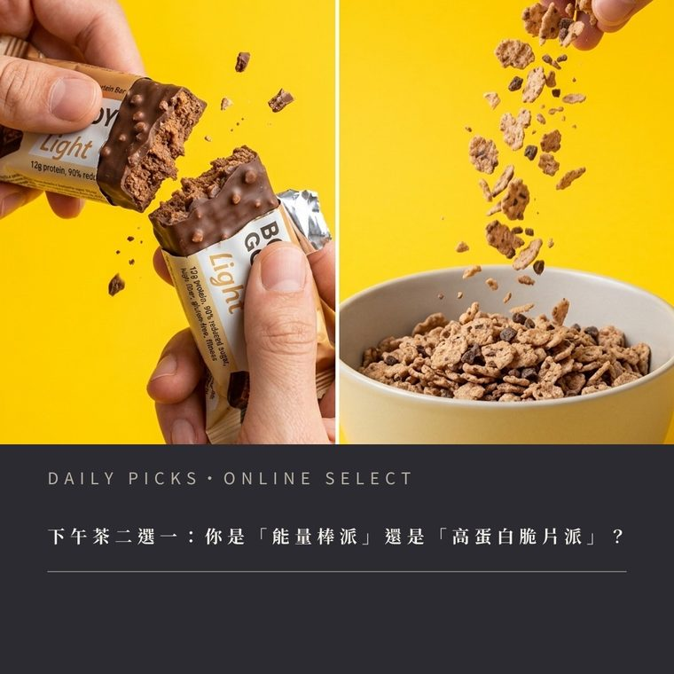
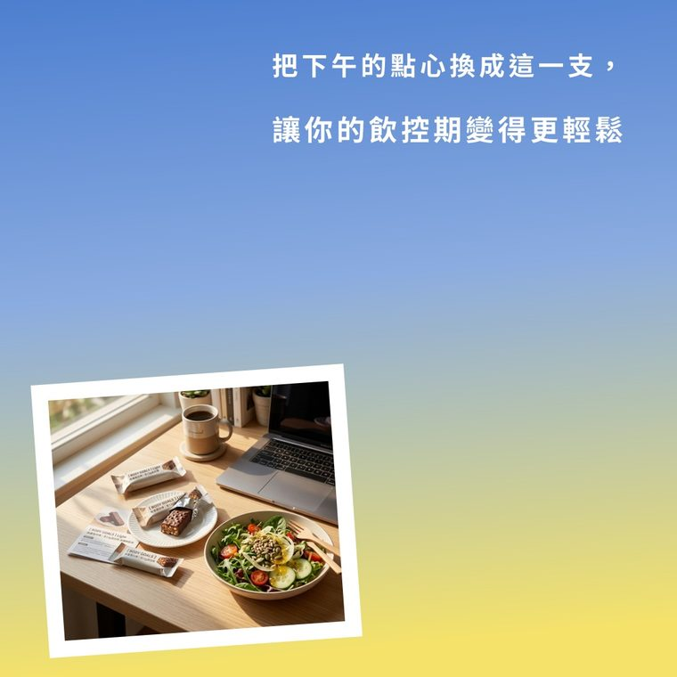
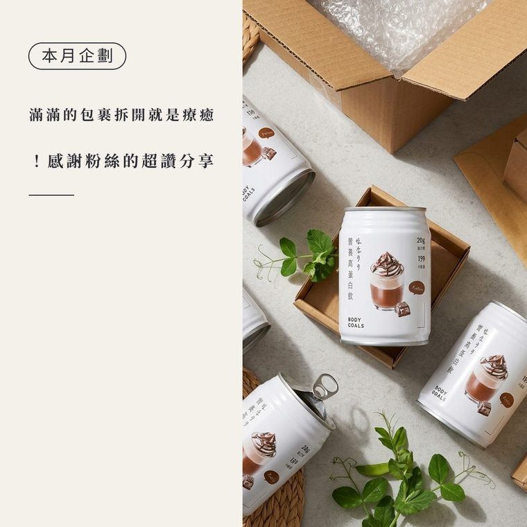
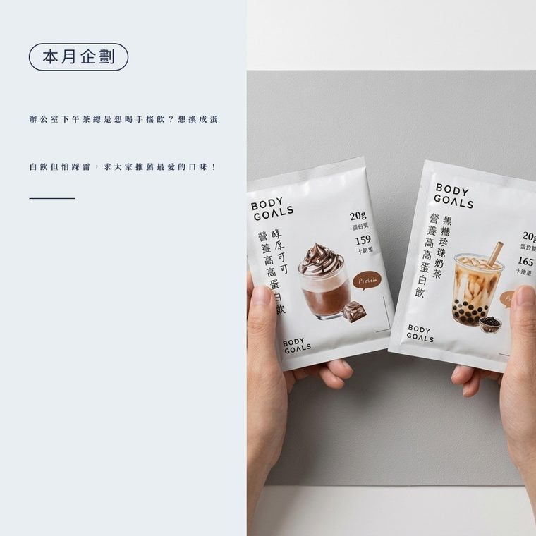
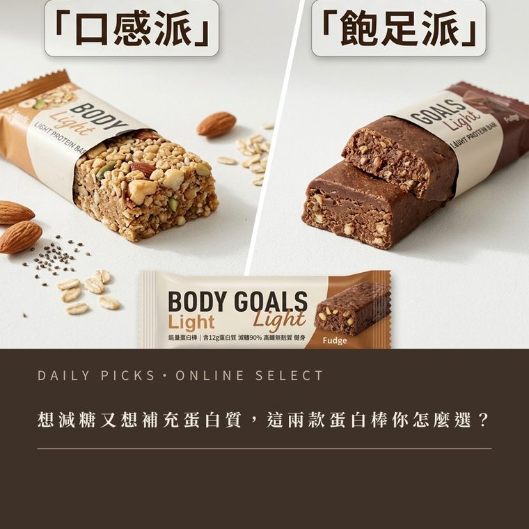
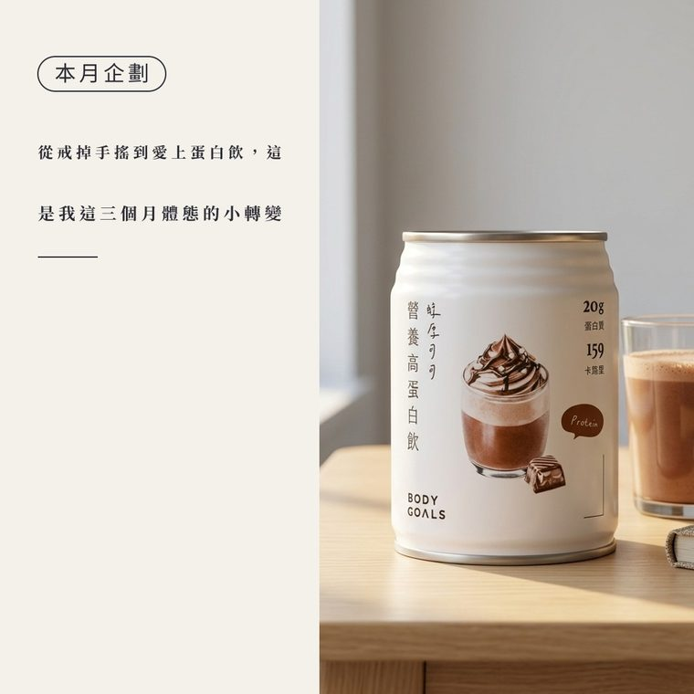
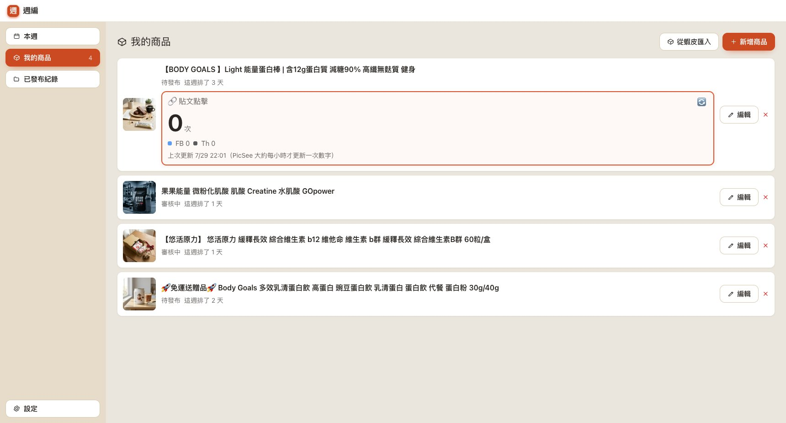
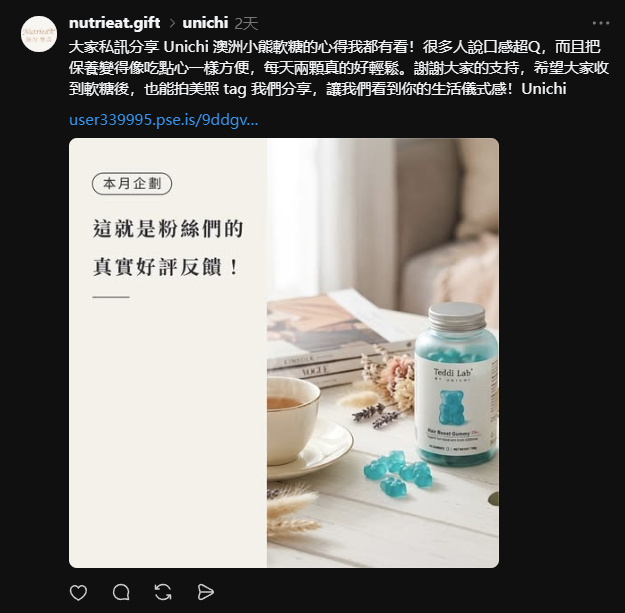

{kind=link}
{kind=link}
{kind=link}
{kind=link}
{kind=link}
{kind=link}
{kind=link}
訓練後總是餓到發慌，但又不想亂吃嗎？🍫✨ 這款「黑巧餅乾高蛋白棒」絕對是你的補給新歡！每一根 40g 剛剛好，濃郁的黑巧克力香氣搭配像餅乾一樣的酥脆口感，真的會讓人忘記這是在吃蛋白棒，完全沒有那種可怕的代糖感～ 不管是在健身房練完，還是下午在辦公室嘴饞想吃點心，隨手拆開獨立包裝來一根，輕鬆補充蛋白質又不怕負擔太重。現在還有超級划算的活動：任選 6 件直接打 9 折！不管是放包包還是囤在辦公室抽屜都非常方便喔。快揪健身夥伴一起湊優惠吧！💪 #高蛋白 #黑巧克力 #蛋白棒 #健身補給 #嘴饞必備 #增肌減脂 #運動營養 #蛋白質補給 #健身餐 #餅乾口感 #下午茶 #健康零食 #健身日常 #proteinbar #workoutsnack
週編——這禮拜要發什麼？打開軟體，已經排好了
給電商賣家的 AI 社群小編
挑好這週要主打的商品，AI 一次生出當週每一天的 IG、FB、Threads 貼文文案，和一張配好的商品圖卡。你逐天看過、改過，再發出去。
私訊打「試用」兩個字就好・免費・一人一組——工作日 48 小時內回覆。
下載時電腦會跳警告是正常的（我們沒買微軟簽章憑證），怎麼按見指引第 1 步。
- 🏪 蝦皮優選店・我們自己的店
- ⭐ 10.8 萬則評價 5.0
- 🛡️ VirusTotal 67 家防毒 0 檢出
- 💳 試用不用綁卡
你是不是也這樣
- 知道社群要經營，但每次打開發文框就卡在「這禮拜要發什麼」。
- 發了三天，第四天忙起來就斷了——斷掉之後更難接回去。
- 商品上百件，社群卻只發得出「新品上架，歡迎選購」。
- 試過 ChatGPT——每件商品都要重新複製貼上介紹、調整格式，弄一弄比自己寫還累。
時間不是最大的問題，「不知道要發什麼」才是。
一週七天，七個角度
一週只賣一天，其他六天讓人記得你
七天各有各的角度，一週只有一天直接賣貨。下面是連續兩週、十四張真的生成出來的圖卡——商品照全部先經 AI 美化換景再套版，沒有一張重複，版型與配色會自動輪替。
第 1 週
週一
知識型
給一則收藏型知識或破除迷思，商品自然帶入。
週二

徵求型拋一個問題向粉絲徵求意見，口語真誠。
週三
 招牌欄目
招牌欄目
招牌欄目
固定專欄形式，給一則實用小知識、維持人設。
週四
互動型
設計二選一或投票，語氣俏皮自信。
週五

故事型講一段幕後或轉變的故事，建立信任與真實感。
週六

賣貨型本週唯一直接賣貨，用情境包裝、不硬推。
週日

曬單型轉貼客人分享或曬單，放大社會證明。
第 2 週
週一
 知識型
知識型
知識型
同一個角度，換個題目、換個版型。
週二

徵求型拋一個問題向粉絲徵求意見，口語真誠。
週三
招牌欄目
專欄繼續開，期數自動往下接。
週四

互動型設計二選一或投票，語氣俏皮自信。
週五

故事型講一段幕後或轉變的故事，建立信任與真實感。
週六
 賣貨型
賣貨型
賣貨型
本週唯一直接賣貨，用情境包裝、不硬推。
週日
曬單型
轉貼客人分享或曬單，放大社會證明。
角度是固定骨架，題目與版型每週都不一樣。滑鼠移上去會暫停。
實際用起來
三件事，你只要做最後一件
STEP 1
商品進素材庫
賣家中心的批量匯出檔直接匯入，商品名稱、介紹、圖片全部帶進來，幾百件一次建檔。之後每一週都從這裡挑，不用再重打一次。
也可以手動一件一件加——臨時要推的新品用這條比較快。

STEP 2
排這一週
勾選這週想推的商品，按一次「排這一週」。AI 會照七個角度排滿七天，再一次把每天的文案、商品圖與貼文圖卡生出來。
想蹭時事就勾「參考這幾天的熱門話題」，軟體會多查一步最近大家在聊什麼（這功能要開啟 Google 計費才能用）；不勾就只用你的商品資料生成。

STEP 3
你點頭了，才發得出去
點某一天，右邊打開那天的抽屜：三個平台的文案各一份、圖卡在最上面。不滿意就重新生成文案、重新生成圖片，或直接在文字框裡改。
滿意了按「複製文字」「下載到電腦」，貼到平台發文框；接了 Meta 的人可以多一顆「一鍵發布這一篇」。

它會做的事
賣的不是「AI 會寫字」，是把一整週排完的流程
這是它真的寫出來的——不是我們示意的
拿內建範例商品「黑巧餅乾高蛋白棒（40g）」按一次生成，三個平台的原樣輸出，一個字沒改。 規則寫死在軟體裡：不得捏造商品資料裡沒有的功效與規格，價格與優惠只能用你給的資訊。
還在找好入口又營養的健身補給嗎？這款黑巧餅乾高蛋白棒，絕對讓你顛覆對蛋白棒的印象！ 許多人在運動後或下午茶時間，總想來點甜的，但又怕攝取過多負擔。這款黑巧餅乾高蛋白棒結合了濃郁黑巧與酥脆餅乾口感，讓你補給的同時也能滿足挑剔的味蕾。 產品賣點一次看： 🔹 高蛋白含量：隨時隨地補充身體所需的蛋白質。 🔹 極致口感：黑巧克力風味搭配餅乾脆口，好吃不膩。 🔹 隨手包裝：40g 輕便設計，獨立包裝攜帶最方便。 現在我們推出了超值優惠，單支售價只要 NT$45，任選 6 件再享 9 折優惠！無論是平時訓練後的營養補充，或是忙碌生活中的快速能量補給，這款蛋白棒都能完美應對。 現在就為你的健身計畫與辦公室零食櫃備貨吧！立即選購，用美味補充蛋白質！
Threads
最近發現這個黑巧餅乾高蛋白棒太讚了吧！完全沒什麼奇怪的蛋白味，吃起來就是像在吃巧克力餅乾一樣，重點是一根才45元，任選6件還能打9折，已經先囤一波了，推薦給平常會嘴饞又想補蛋白質的朋友！#高蛋白
你可能會想
「免費 ChatGPT 就能寫，為什麼要買？」
可以，我們也是用 AI。差別在流程。
| ChatGPT | 週編 | |
|---|---|---|
| 這週發什麼 | 你自己想 | 排一次，整週的內容一起出來 |
| 商品資料 | 每件手動複製貼上 | 賣家中心匯出檔整批匯入 |
| 多平台格式 | 每個平台重新調教提示詞 | 一次生出三平台各自的格式 |
| 商品圖 | 不會處理你的圖 | 去背、美化、裁尺寸、做圖卡 |
| 店家資訊 | 每次重新交代 | 賣場連結、logo 設定一次永久帶入 |
| 一百件商品 | 一百次對話 | 一次批量匯入 |
不確定差在哪？拿一組序號，用自己的商品跑一週最準。
私訊拿序號
先把話講清楚
買斷之外，你唯一的成本是 AI 費用
——付給 Google，不是付給我們
- 軟體用你自己申請的 Google Gemini 金鑰，指引手把手教，五分鐘搞定。
- 文字生成有免費額度：申請金鑰不用綁信用卡，裝好當天就能生出第一篇文案。貼文圖卡直接用你的商品照套版，也不用開計費。
- AI 圖片美化要在 Google 開啟計費，每張約 NT$2。開通時順手設「花費上限」，超過會自動停。
- ⚠️ 開啟計費後免費額度就沒了，連文字生成也會開始計費（金額極低，但我們有義務先講）。
- 沒有月費、沒有訂閱、沒有隱藏費用。永遠不會改成訂閱制。
價格
一次買斷，用到你不想用為止
標準版（買斷）
NT$8,999
- 完整軟體
- v2 版本免費更新
- 自購買日起至少 12 個月維護
- 圖文上手指引
目前為試用推廣期，尚未開放購買——正式開賣日會在粉專公告。 現在私訊可以先預約，開賣時第一批通知你。
先講一件事：下載和安裝時，電腦會跳警告。
瀏覽器可能說「這類檔案不常下載，可能有危險」，按「保留」；安裝時 Windows 會跳藍色的「已保護您的電腦」，點「其他資訊 → 仍要執行」。
原因是我們沒買微軟那張年費的簽章憑證，不是軟體有問題——指引第 1 步有逐步圖解。
不放心就自己驗：這個檔案在
VirusTotal 67 家防毒引擎掃描下沒有任何一家判定為惡意（0／67），報告永久公開；檔案指紋與比對方法在指引裡。
這個數字怎麼看：找人代操社群，一個月數千到上萬，而且月月都要付、內容還得你自己盯。NT$8,999 是一次付清——照合夥人自己店裡的用法，一週省下來的是原本寫文排圖的一整個晚上。
裝不起來？附一次免費的遠端設定協助。 我們連進你的電腦，把安裝、序號、Gemini 金鑰一次弄好——每位買家都有一次，不另外收費。
開賣之後，付款流程會是這樣
還沒開賣，但先寫清楚——你在決定要不要付錢之前，就該知道錢會怎麼走。
- 私訊粉專說你要買，我們確認你已經試用過、用得順。
- 我們把匯款資訊傳給你——戶名與購買條款上載明的賣方一致，不會臨時換成別的帳戶。
- 匯款後回傳帳號末五碼。
- 我們對帳後，工作日 24 小時內把序號傳給你（附一組序號與啟用說明）。
- 序號貼進軟體就啟用，你原本試用時做的商品與設定全部留著，不用重來。
先試用、再購買。試用版全功能不打折。序號屬透過網路下載交付的數位內容，依消費者保護法第 19 條及其例外準則不適用七日鑑賞期、售出後恕不退費——所以請務必先試用滿意再買。詳見購買條款。
用的人怎麼說
目前只有一則，是我們自己的店
軟體還沒正式開賣，還沒有第二個人的見證可以放。等第一批試用的賣家回饋進來，我們會照實補上——包含不好的那些。
以前一週的貼文要寫掉我一整個週末，現在星期一早上排一次就好。圖卡也不用再自己拉版了，生出來就能發。
—— Nutrieat 紐特禮品（蝦皮優選・10.8 萬則評價 5.0）

常見問題
買之前你大概會想問
錢的事
免費試用要綁信用卡嗎？
不用。下載軟體免費、試用序號免費、Gemini 金鑰申請也免費（文字生成在免費額度內）。只有 AI 圖片美化才需要在 Google 開啟計費——而且那筆錢是付給 Google 的，你完全掌控。
試用的兩週、50 次夠用嗎？
夠。排一整週大約用掉 8 次——按「幫我排這一週」算 1 次，接著七天各生一次算 7 次。只重做圖卡不計次，所以你可以放心把版型換到滿意為止。50 次大概是六週的量，兩週的試用期用不完。
可以退費嗎？
先試用、再購買——試用版全功能不打折，試到滿意再決定。序號是透過網路下載交付的數位內容，一經交付就無法收回，依消費者保護法第 19 條及其例外準則不適用七日鑑賞期，售出後恕不退費。購買前我們會再跟你確認一次這件事。詳見購買條款。
之後會收月費嗎？
永遠不會。買斷就是買斷；v2（版本號 2.x）的更新全部免費。下一代（3.0 以後）才可能另外收費——老客不高於新客價五折，發布前一年內買的人免費升級，而且不升級照樣能用。
安全與放心
安裝時 Windows 跳出藍色警告「已保護你的電腦」？
正常的。小型軟體沒買微軟的年費簽章憑證都會這樣，不是軟體有問題——指引第 1 步有教，點兩下就過。
它會不會用我的帳號亂發文？
不會。所有內容經你核准才會發布；預設的發文方式是「複製貼上」，根本不碰你的帳號。
資料的部分：我們沒有伺服器，你的東西不會經過我們這邊——商品資料、金鑰、生成出來的圖文都存在你自己的電腦。唯一的例外是生成的那一瞬間：該商品的名稱、介紹與照片會用你自己的金鑰送到
Google 的 AI，這是 AI 生成必經的一步，跟你自己開 ChatGPT 貼商品資料是同一件事。除此之外軟體不回傳任何東西。
用 AI 生的內容發文，會不會被平台判違規？
軟體預設動線是「生成 → 你看過改過 → 複製貼上」——對平台來說，那就是你手動發的一篇貼文。一天一則是正常經營不是灌水，內容每篇都經你核准。要注意的是各平台自己的內容規範（例如療效宣稱在哪都不行），那跟用不用 AI 無關。
你們如果哪天不做了，軟體會不會就不能用？
不會。軟體沒有我們的伺服器，序號在你自己的電腦上驗證，AI 用的是你自己的 Google 金鑰——沒有一樣東西經過我們。就算我們哪天消失了，你手上的版本照常運作、資料都在。這是買斷制加離線設計才做得到的事，訂閱制的雲端工具做不到。
適不適合我
我電腦不太好，裝得起來嗎？
會用賣家中心，就會用這套。有圖文上手指引一步步帶；真的卡住，每位買家都有一次免費遠端協助。
我不是賣保健食品，這套適合我嗎？
適合。網站上的範例全是合夥人自己店裡的商品，因為那是我們唯一敢拿出來的真實成品——不代表軟體只會做保健品。排週的七個角度（知識、問答、招牌、互動、故事、賣貨、曬單）跟品類無關；商品資料是從你賣家中心的匯出檔帶進來的，服飾、3C、手作、食品都一樣處理。拿試用序號用自己的商品跑一週，最準。
支援 Mac 嗎？
目前只支援 Windows 10／11（64 位元）。
AI 寫出來的東西，讀起來會不會很像機器人？
每一篇你都看得到、改得動。不滿意可以只重寫文案（圖卡不動）、只重做圖片（文案不動），或直接在文字框裡改。發出去的永遠是你點頭的那一版。